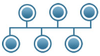
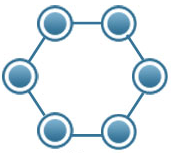
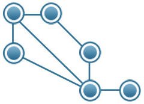

| Bus |  | - Works well when you have a small network.
- It requires less cable length than other topologies.
| - It can be difficult to identify problems if whole network goes down.
- Not great for large networks.
- Terminators are required for both ends of main cable.
|
| Star | | - Reliable - if one cable or device fails, then all others continue to work.
- 0 to little data collisions.
| - Expensive.
- It requires a lot of cable length.
- If the central hub fails, every node in network fails!
|
| Ring |  | - Data transfer is quick.
- 0 to little data collisions.
| - Expensive.
- If main cable fails, or any device is faulty, whole network fails.
|
| Mesh |  | - If 1 of the connections goes down, there will be lots of other routes that can be taken to get to the same destination.
| - Expensive.
- Requires the most cable of all topologies.
- Requires big NIC's (more nodes -> bigger NIC's)
|
| Tree | | - Scalable as leaf modes can accommodate more nodes in hierarchical chain.
| - Expensive.
- Lot's of maintenance is required.
- Backbone forms the point of failure.
|